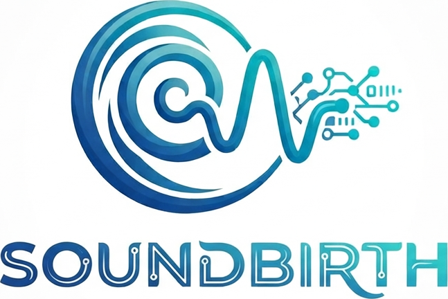

Centro de Referência de Implante Coclear
Da primeira consulta
à primeira conversa.
A jornada do implante coclear é longa — anos, muitas vezes — e passa por seis especialidades, duas dezenas de etapas e um período de reabilitação que decide o resultado. O SoundBirth torna esse percurso visível: para o doente e a família, que sabem sempre onde estão e o que vem a seguir; e para a equipa, que vê onde cada candidatura está parada e quem está a usar pouco o processador.
Exemplo: percurso do Sr. Manuel, 61 anos — implantado à direita, em programação e reabilitação.
Porquê
Três coisas que hoje se perdem pelo caminho
O doente não sabe onde está
Entre a referenciação e a cirurgia passam-se meses de exames dispersos por serviços diferentes. Sem um fio condutor, a espera parece abandono — e a desistência acontece antes da decisão.
A candidatura pára sem que ninguém veja
Falta uma TC, falta a reavaliação depois da prova de próteses, falta a avaliação de psicologia. O processo fica em suspenso até alguém reparar — normalmente na reunião seguinte, semanas depois.
O resultado decide-se depois da cirurgia
O implante dá acesso ao som; ouvir de novo constrói-se nas horas de uso diário e na reabilitação. Quem usa pouco o processador nos primeiros meses tem pior resultado — e isso é visível nos dados muito antes de ser visível na consulta.
A jornada
Seis fases, vinte etapas, uma linha só
Cada doente tem uma cópia deste percurso, com datas, responsáveis e estado. É o mesmo mapa dos dois lados: o que o doente vê em linguagem simples, a equipa vê em linguagem clínica.
Este é o percurso do adulto. O da criança tem sete fases e começa muito antes — no rastreio auditivo da maternidade — passando pela intervenção precoce, pela creche e pela escola, até à transição para a área de adulto aos 18 anos.
Duas idades, dois percursos
A criança não é um adulto pequeno
Os dois percursos partilham a plataforma, mas quase nada mais: começam em sítios diferentes, correm a velocidades diferentes e são respondidos por pessoas diferentes. Por isso são duas áreas e não uma com um filtro de idade.
0 aos 18 anos
Área da família
- Começa no rastreio auditivo neonatal, não numa consulta pedida pelo próprio.
- Corre contra o relógio: regra 1-3-6 e implantação idealmente antes dos 18 meses.
- Mede-se a idade auditiva e os marcos de linguagem, não só o audiograma.
- Inclui a creche e a escola: microfone remoto, acústica da sala, EMAEI.
- Quem responde aos questionários são os pais até aos 6 anos, a criança dos 6 aos 12, o próprio a partir dos 13.
- Termina numa transição preparada para a área de adulto.
18 anos ou mais
Área do adulto
- Começa numa referenciação, muitas vezes anos depois de a surdez se instalar.
- Passa por uma prova de próteses documentada antes de haver candidatura.
- Mede-se discriminação vocal no silêncio e no ruído, e o que a pessoa relata da sua vida.
- Inclui trabalho, família e isolamento social — e acufeno e tontura, quando existem.
- Responde sempre o próprio.
- Continua em seguimento anual, com atualização do processador e eventual segundo implante.
O princípio de desenho
Uma plataforma para quem não ouve
Esta é a diferença entre o SoundBirth e qualquer outra plataforma de seguimento: os seus utilizadores não atendem o telefone. Nada aqui pode depender de ouvir — nem o lembrete da consulta, nem o vídeo explicativo, nem o contacto urgente da equipa.
A preferência de comunicação de cada pessoa (escrito, LGP, leitura labial, intérprete presente ou remoto) é um campo obrigatório do perfil e viaja com ela para todas as marcações.
- Contacto sempre por escrito: mensagem na plataforma, SMS e email. A chamada telefónica é a exceção, nunca o padrão.
- Todos os vídeos com legendas, transcrição e versão em LGP.
- Pedido de intérprete de Língua Gestual Portuguesa feito junto com a marcação, e visível na agenda do profissional.
- Linguagem clara, frases curtas, um assunto por ecrã — pensado também para famílias de crianças pequenas.
- Contraste AA, alvos de toque de 44 px, navegação por teclado, compatível com leitor de ecrã.
- Alertas visuais e hápticos, nunca sonoros.
Aceder
Três portas, o mesmo percurso
O adulto entra na sua área; os pais entram na área da criança, até ela fazer 18 anos e o acesso passar para ela; os profissionais entram com credenciais institucionais. Neste esboço, qualquer botão entra diretamente — não há autenticação real nem dados de pessoas reais.
Numa versão real
- Conta do doente criada pela equipa, ativada por código de uso único (SMS ou email).
- Autenticação em dois passos nos dois portais.
- Cada perfil vê apenas o que lhe compete; todos os acessos ficam registados.
- Dados cifrados em trânsito e em repouso, alojados em Portugal/UE.